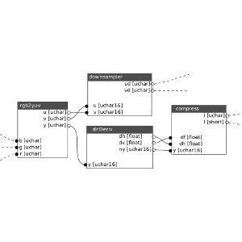
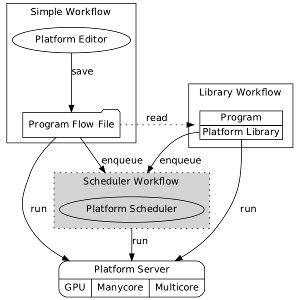
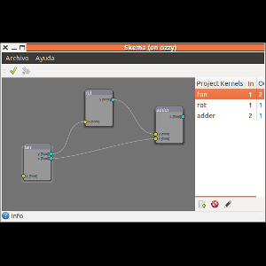

About Skema Platform
The Skema Platform is a set of programs implemented using the Haskell platform. This software suite allows the use of specialized hardware (GPUs, ManyCore and MultiCore) in a parallel computing model based on data flow and runs in a distributed environment (such as a cluster of computers). Skema Platform has the following features:
- A Visual Editor of Skema Programs
- A Server to run Skema Program over data sets
A more detailed explain can found on paper: Advanced Programming Platform for efficient use of Data Parallel Hardware
Getting Started
You should start with the Skema Tutorial, that explains how to install the Skema software and how to use in the simplest tests.
  